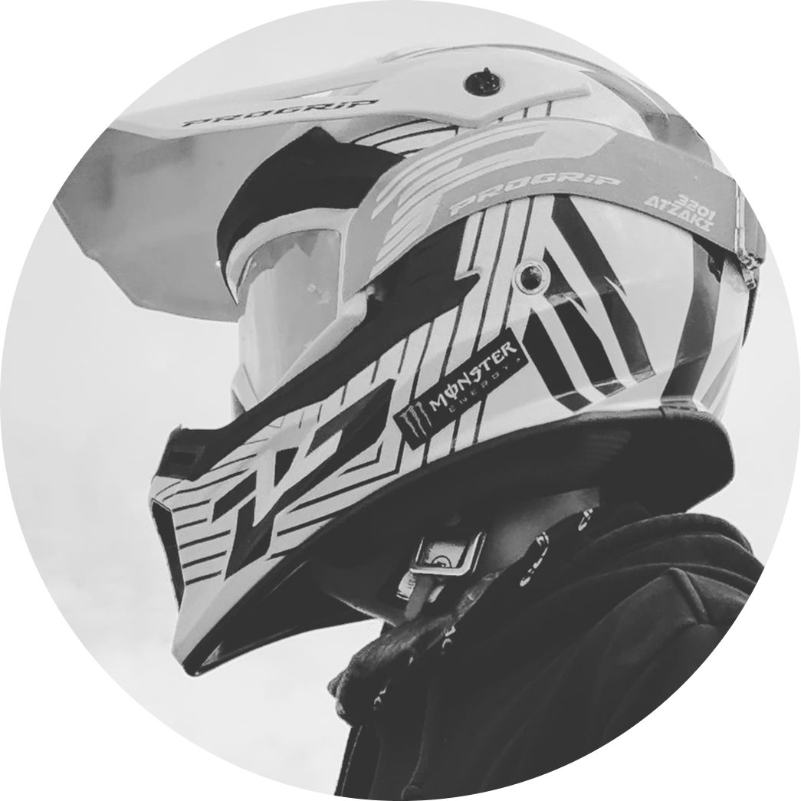

CHI SONO?
Sono Paseri Kevin, alunno della 4C Info, presso l'istituto superiore IIS Denina Pellico Rivoira, sez. Rivoira. Sono un ragazzo intraprendente e in grado di mettersi alla prova costantemente, capace di acquisire informazione molto attivamente e molto curioso di imparare sempre di più.
Ho creato questo sito web per avere un "portale" in cui avere tutti gli appunti degli argomenti trattati in classe di TPSIT. Per chi non sapesse cos'è TPSIT, ovvero Tecnologie e progettazione di sistemi informatici e telecomunicazioni, è una materia di indirizzo che si occupa di far acquisire cometenze nell'ambito della sviluppazione di applicazioni informatiche, gestire ed elaborare dati.
Ho creato questo sito web per avere un "portale" in cui avere tutti gli appunti degli argomenti trattati in classe di TPSIT. Per chi non sapesse cos'è TPSIT, ovvero Tecnologie e progettazione di sistemi informatici e telecomunicazioni, è una materia di indirizzo che si occupa di far acquisire cometenze nell'ambito della sviluppazione di applicazioni informatiche, gestire ed elaborare dati.

VUOI SAPERE DI PIU' SULLA MIA SCUOLA? ECCO A TE!

L'I.I.S. Denina - Pellico - Rivoira nacque negli anni 2000-2001 dalla fusione di due istituti statali di Saluzzo: l'Istituto Tecnico Commerciale "Carlo Denina" e l'Istituto Professionale per i Servizi Commerciali Turistici e Sociali "Silvio Pellico".
Più tardi, nel 2007-2008, è stato attivato il corso per i Geometri. Nel 2010-2011 venne aggiunta la sezione di versuolo dell'Istituto Tecnico Industriale "Giovanni Rivoira". Nel 2014-2015 sono stati attivati l'indirizzo di Informatica presso l'ITIS Rivoira din Verzuolo e l'indirizzo di tecnico per industria e artigianato settore legno presso l'IPC Pellico di Saluzzo.
Più tardi, nel 2007-2008, è stato attivato il corso per i Geometri. Nel 2010-2011 venne aggiunta la sezione di versuolo dell'Istituto Tecnico Industriale "Giovanni Rivoira". Nel 2014-2015 sono stati attivati l'indirizzo di Informatica presso l'ITIS Rivoira din Verzuolo e l'indirizzo di tecnico per industria e artigianato settore legno presso l'IPC Pellico di Saluzzo.
DOVE PUOI TROVARMI

Cliccando sull'immagine potrai trovare alcuni dei miei progetti svolti nel quarto anno delle superiori.
Cliccando sull'immagine potrai scoprire il mio profilo instagram e se vorrai anche seguirmi.